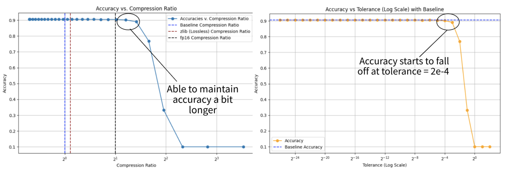

In practice, the compression of model weights is done using
lossless compression algorithms because weights are usually very
sensitive to information loss. However, Quantization shows that
model weights can afford some degree of information loss without
compromising performance completely.
We decided to conduct
a comprehensive set of experiments to see if ZFP could be used with
existing techniques - Quantization, Pruning, Weight Clustering - to
further reduce the size of models without losing too much performance.
The tests covered a variety of popular architectures like ResNet, Bert,
and VGG. On its own, ZFP seems to perform similarly to traditional
quantization, but it has the advantage of being more fine-grained
in information loss. As a result, it can achieve a slightly better
compression ratio in many cases.

If you want more information, feel free to explore the repository or the project paper.